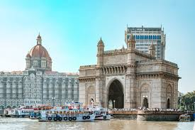
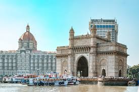

Tourism and Coffee plantation industry in India is growing rapidly. India offers beautiful hill regions, coffee estates, and rich culture. This project shows some famous coffee and tourist destinations in India.
 
